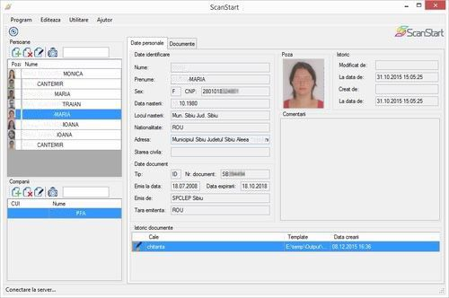

CE ESTE SCANSTART?
ScanStart este o soluție software & hardware pentru optimizarea proceselor dintr-un birou notarial.
Automatizarea începe cu citirea datelor de identificare ale clienților cu ajutorul unui scanner dedicat și excelează cu generarea automată a documentelor notariale.
AFLA CUM FUNCTIONEAZA
sau vezi lista de
INTREBARI FRECVENTE

CE OFERA SCANSTART
Viteză, Acuratețe, Gestiune, Plus-valoare, Flexibilitate
